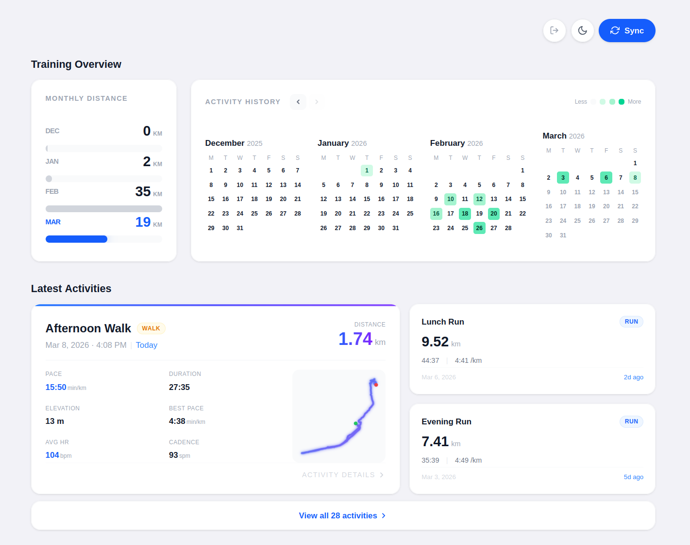
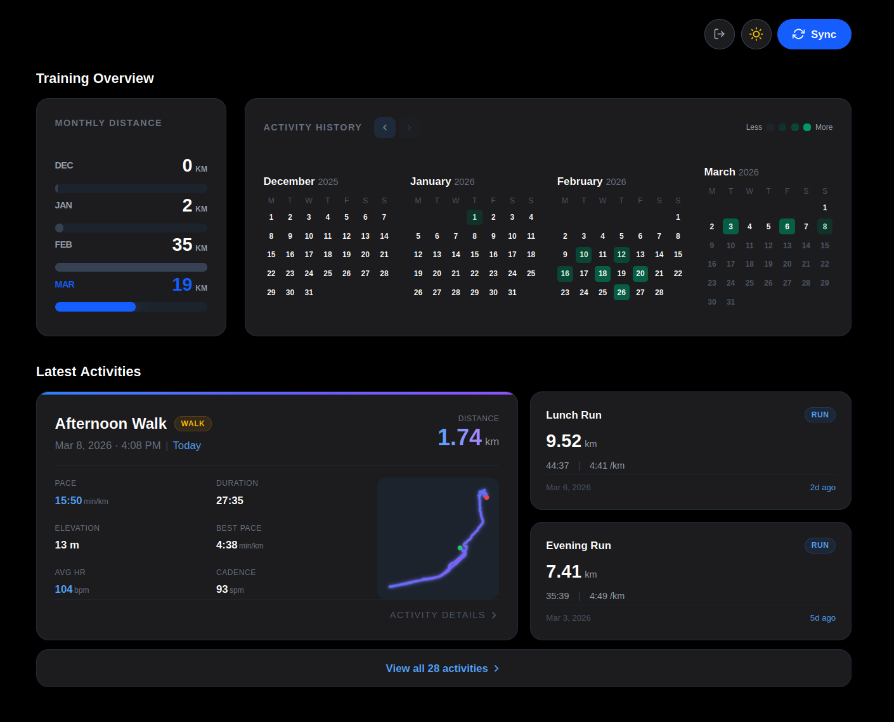
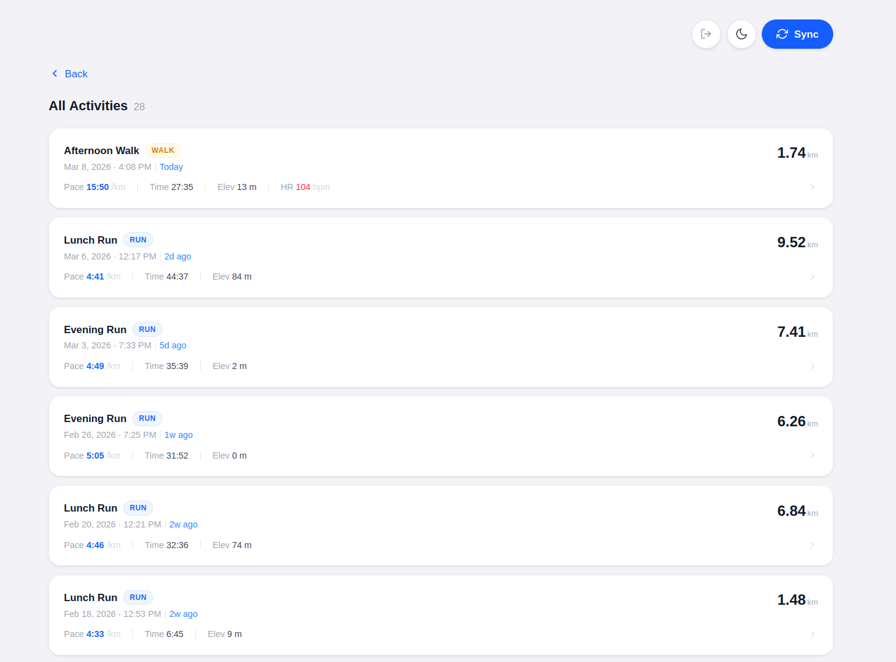
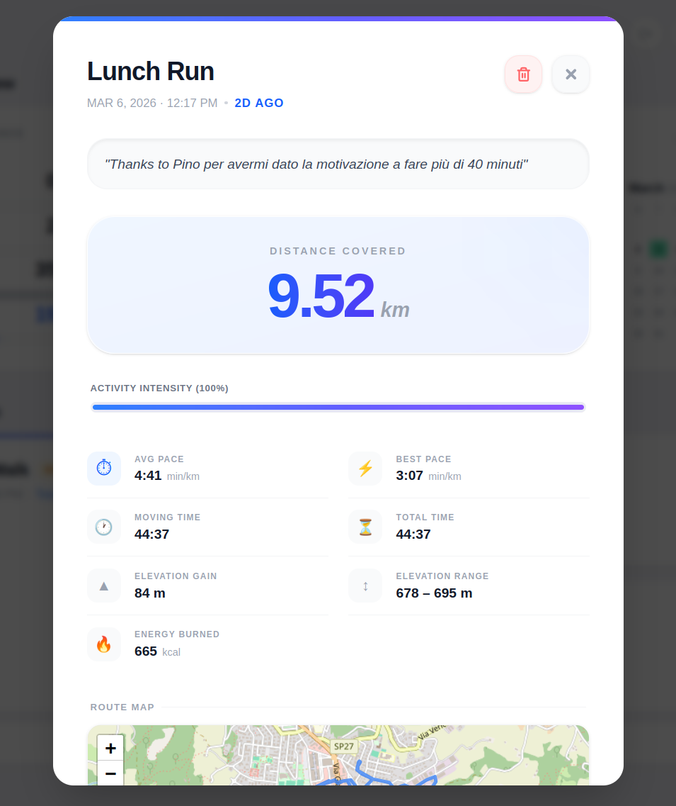
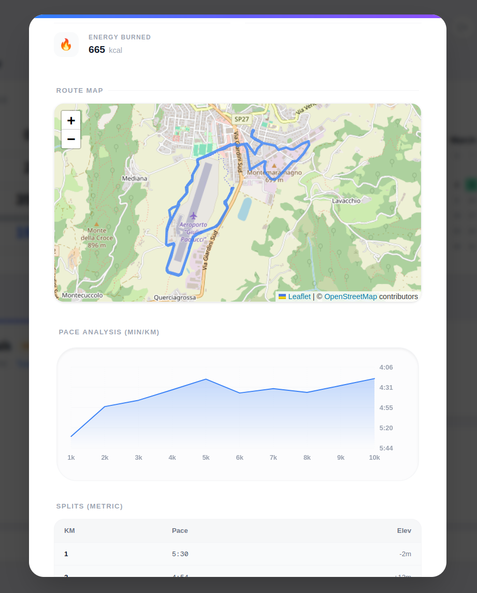
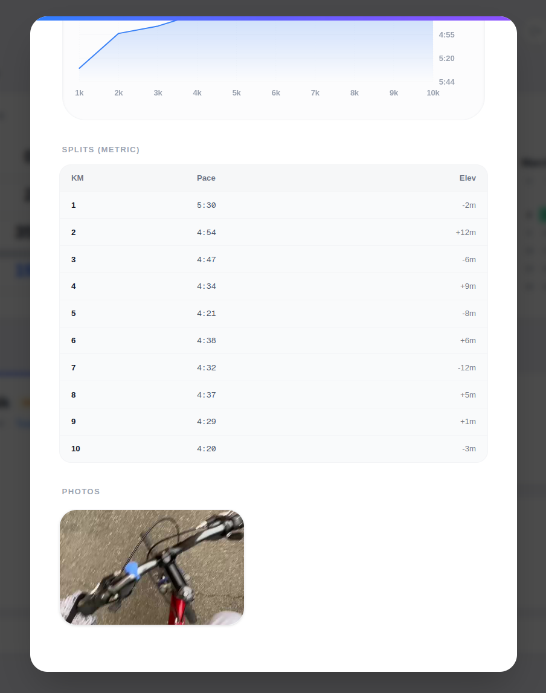
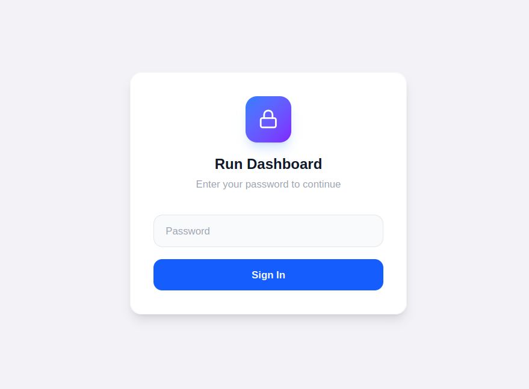

This project was born out of being fed up with seeing ads in the middle of my Strava stats, so I decided to build my own dashboard.
Actually, Run Dashboard isn't meant for everyone. It's a deeply personal tool I built to visualize my training data exactly how I want it. Unlike standard apps, it focuses strictly on what I find useful, pulling data directly from the Strava API and showing it through an interface I designed from scratch.
Since I spend a lot of time staring at charts and maps, I really wanted an interface that’s easy on the eyes. I built a theme system that adapts to system settings or can be toggled with a single click. Both themes keep that "glassmorphism" effect that I’m a big fan of.


To get a quick sense of how my month is going, I created an interactive calendar. I took some inspiration from the GitHub contribution graph for the layout: each dot represents a workout, and clicking on it jumps straight to that activity's details. On the left, there's a simple summary of my monthly mileage with a clean bar chart.
On the main screen, I can immediately see my last 3 runs with the key data in plain sight. It’s perfect for a quick check right after syncing. If I want to see the whole history, there's a dedicated page with the full list.
The full history view allows me to scroll back through months and years of training sessions effortlessly.

This is where I go to see how I actually performed. Besides the usual stats, I integrated Leaflet maps for the route, a dynamic pace chart, and a table with splits for every single kilometer. If I took any photos during the run, the app pulls them from Strava and shows them at the bottom.



The app is hosted on Vercel, which makes it extremely easy to access. Whether I'm on my laptop at home or checking stats on the go, it works perfectly. The mobile responsiveness was a priority: the interface adapts smoothly to smaller screens, so I have a full-featured dashboard right in my pocket.
The best part about building this myself is that it’s completely customizable. If I decide I want a new metric or a different chart next week, I can just add it!
Since this is my personal dashboard, I added a simple login screen. It’s a basic system based on passwords and JWT that keeps my data private and ensures only I can trigger the sync with Strava's API.
